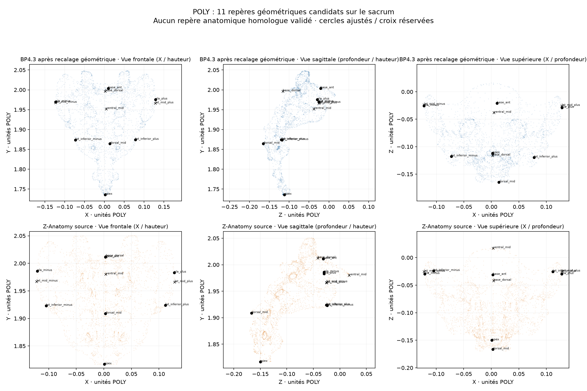

Étude de recalage 3D · sacrum / L1–L5
Les deux atlas ont été comparés avec onze repères géométriques candidats. Leur identité anatomique exacte n'est pas encore validée. L'étude vérifie si déplacer le sacrum améliore réellement la cohérence avec les cinq vertèbres lombaires.
Nous ne retenons pas la correction isolée du sacrum. Elle rapproche certains repères candidats, mais éloigne les vertèbres L2 et L4 de leur référentiel déjà commun. Les 206 os affichés restent inchangés.
| Contrôle hors ajustement | Transformation commune | Correction du sacrum candidate |
|---|---|---|
| 4 points candidats réservés sur le sacrum — RMS | 0,04913 | 0,03549 |
| L2 — écart de surface dirigé RMS | 0,00492 | 0,02444 |
| L4 — écart de surface dirigé RMS | 0,00545 | 0,01338 |
| L5 — écart de surface dirigé RMS | 0,00371 | 0,01242 |
Lecture correcte : les points réservés n'ont pas servi au calcul, mais proviennent des mêmes atlas. Ce n'est ni un scanner indépendant ni une validation clinique. Les métriques des points et celles des surfaces ne doivent pas être mélangées.

Un anatomiste ou un opérateur expert doit identifier et vérifier dans les deux maillages le promontoire, le plateau S1, les ailes du sacrum, les processus articulaires supérieurs, l'ouverture du canal, l'apex, le hiatus, la crête et les premiers foramens dorsaux. Un jeu de points doit rester réservé à la mesure indépendante après ajustement.
La documentation de 3D Slicer préconise généralement six à huit paires de repères homologues pour démarrer un recalage rigide. Les repères actuellement générés automatiquement à partir des contours ne satisfont pas cette exigence anatomique.